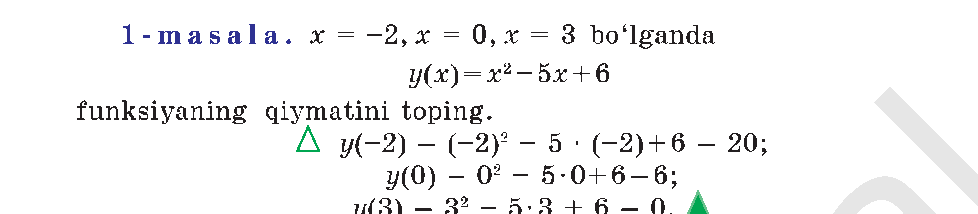
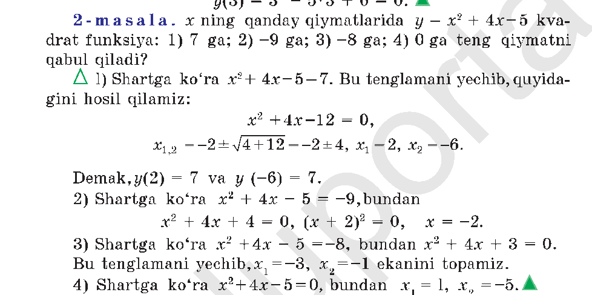
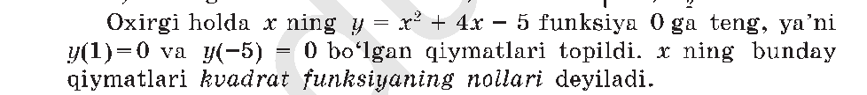

I bob · 1-§ · dars 1/38
Kvadrat funksiyaning ta'rifi
Nima uchun y = ax² + bx + c kvadrat funksiya deyiladi.
Dars rejasi · 45 daqiqa
- 5 daqKirish — o'tgan mavzuni eslash
- 10 daqSahna — slayderlar bilan jonli ko'rsatish (doskada)
- 8 daqQoida — ta'rifni birga chiqarish
- 7 daqSavollar — sinf ovoz bilan javob beradi
- 10 daqDarslikdan mashqlar — daftarga yechish
- 5 daqEslab qol — xulosa va uyga vazifa
y = 1x² + 0x + 0
Raqamlarni suring yoki pastdagi slayderdan foydalaning
Doskaga kim chiqadi?
Ismlarni bir marta kiriting — dars davomida istalgancha ishlatasiz.
Sinf birga yechadi
Masalani ekranda ko'rsating, taymerni ishga tushiring — vaqt tugagach javobni oching.
Kirish
Telefoningizdagi o'yinda personaj sakraganda, uning yo'li tekis chiziq bo'lmaydi — avval yuqoriga ko'tariladi, keyin egilib pastga tushadi. Aynan shu egri yo'lni hisoblab, o'yin dvigateli har millisekundda personajni to'g'ri joyga chizadi. Mana shu hisob-kitob — bugun o'rganadigan kvadrat funksiyaning o'zi.
Yuqoridagi slayderlarni siljiting. a ni nolga tenglashtiring — egri chiziq to'g'ri chiziqqa aylanadi. Demak, a shu formulani aynan kvadrat funksiya qiladigan yagona harf. b va c esa faqat uni suradi, shaklini o'zgartirmaydi.
Reja
Formula qismlari a, b, c ga ajraladi. a = 0 bo'lsa chiziqli funksiya qoladi.
Qoida
y = ax² + bx + c ko'rinishidagi funksiya kvadrat funksiya deyiladi, bunda a, b, c — berilgan sonlar va a ≠ 0. Aynan x² had — ya'ni x ning ikkinchi darajasi — bu funksiyaga nom beradi. Agar a = 0 bo'lsa, x² had yo'qoladi va qoladigan y = bx + c allaqachon chiziqli funksiya, kvadrat emas.
Savollar
Eslab qol
- Kvadrat funksiyada a ≠ 0 shart — aks holda x² had yo'qoladi.
- a — shaklni (tarmoqni) belgilaydi: musbat bo'lsa yuqoriga, manfiy bo'lsa pastga qaraydi.
- b va c grafikni suradi, lekin uni parabola bo'lishdan chiqarmaydi.
Darslikda
Alimov, Xolmuhamedov, Mirzaahmedov — 9-sinf algebra (2019): 1-§, 5–6-betlar.
{kind=link}
{kind=link}
Doskada namuna yechish
Kitobdagi 3 ta masala — o'qituvchi doskada shu tartibda yechib ko'rsatadi. Har birida rasm (kitobdan) va yoniga "Keyingi qadam" bilan ochiladigan tushuntirish bor.

1-masala · 6-bet- Formula: y(x) = x² − 5x + 6. x o'rniga har bir qiymatni birma-bir qo'yamiz.
- x = −2: y(−2) = (−2)² − 5·(−2) + 6 = 4 + 10 + 6 = 20.
Ko'pchilik shu yerda xato qiladi — bosib ko'ring
Ba'zi o'quvchilar (−2)² = −4 deb yozadi. Bu xato: manfiy sonni kvadratga oshirganda ishora yo'qoladi — (−2)·(−2) = +4. Doskada shu joyni sinfdan so'rab tekshirib o'ting.
- x = 0: y(0) = 0² − 5·0 + 6 = 6.
- x = 3: y(3) = 3² − 5·3 + 6 = 9 − 15 + 6 = 0.

2-masala · 6-bet- Formula: y = x² + 4x − 5. Har bir qiymat uchun tenglama tuzamiz: y ni shu songa tenglaymiz.
- y = 7: x² + 4x − 5 = 7 → x² + 4x − 12 = 0. x₁,₂ = −2 ± √(4+12) = −2 ± 4 → x₁ = 2, x₂ = −6.
- y = −9: x² + 4x − 5 = −9 → x² + 4x + 4 = 0 → (x+2)² = 0 → x = −2 (bitta ildiz).
- y = −8: x² + 4x − 5 = −8 → x² + 4x + 3 = 0 → x₁ = −3, x₂ = −1.
- y = 0: x² + 4x − 5 = 0 → x₁ = 1, x₂ = −5.

Ta'rif · 6-betMuhim tushuncha: yuqoridagi 2-masalaning oxirgi qismida (y = 0) topilgan x₁ = 1 va x₂ = −5 — funksiyaning qiymati nolga teng bo'ladigan x lar. Bunday x lar funksiyaning nollari deyiladi. 3-masala aynan shuni topishni so'raydi.
Darslikdan mashqlar · 6-bet
Daftarga yeching. O'qituvchi doskada tekshiradi.
-
1-mashq (og'zaki). Quyidagilardan qaysilari kvadrat funksiya:
1) y = 2x² + x + 3; 2) y = 3x² − 1; 3) y = 5x + 1; 4) y = x³ + 7x − 1; 5) y = 4x²; 6) y = −3x² + 2x?
-
2-mashq. x ning shunday haqiqiy qiymatlarini topingki, y = x² − x − 3 kvadrat funksiya quyidagi qiymatni qabul qilsin:
1) −1 ga; 2) −3 ga; 3) −13/4 ga; 4) −5 ga.
Xulosa
- Kvadrat funksiya — ko'rinishi y = ax² + bx + c, bunda a ≠ 0.
- a — parabolaning tarmoqlarini boshqaradi: a > 0 bo'lsa yuqoriga, a < 0 bo'lsa pastga qaraydi.
- b — parabolaning uchini (yuqori/pastki nuqtasini) yon tomonga suradi.
- c — grafikni yuqoriga yoki pastga ko'chiradi (y o'qi bilan kesishish nuqtasi).
- Funksiyaning qiymatini topish uchun x o'rniga sonni qo'yib, natijani hisoblaymiz.